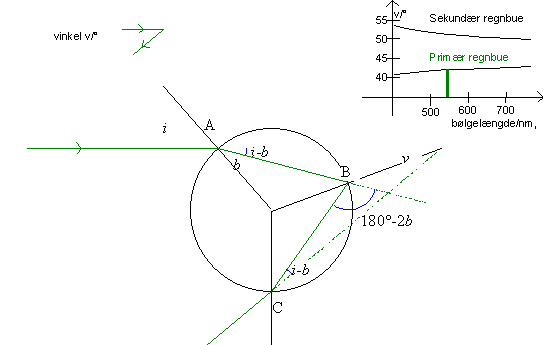
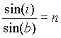
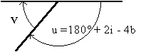
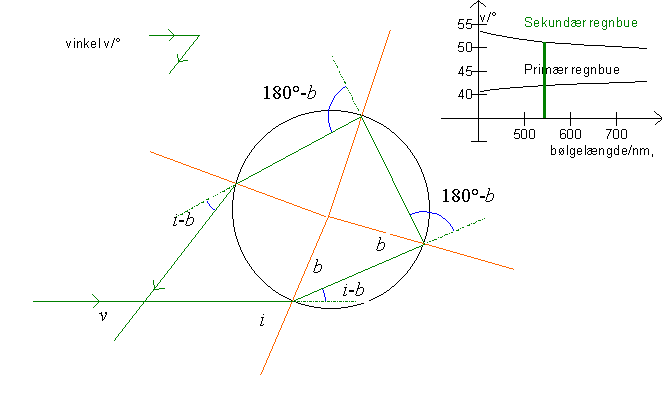
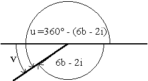

Den primære regnbue

Billedet herover viser, hvorledes en stråle brydes og reflekteres i en dråbe i den primære regnbue. Vha. refleksionsloven og brydningsloven kan vi beregne vinklen mellem strålen fra solen og strålen vi ser (regnbuen). Denne vinkel kaldes v.
I punktet A brydes strålen, og ifølge brydningsloven gælder der

,
hvor i er indfaldsvinklen, b brydningsvinklen og n vanddråbens brydningsindeks. Strålen afbøjes vinklen i - b.
I punktet B spejles strålen inde i dråben (udfaldsvinkel = indfaldsvinkel= b), strålen afbøjes vinklen 180° - 2b.
I punktet C brydes strålen ud af dråben, her er indfaldsvinklen b og brydningsvinklen i. Strålen afbøjes vinklen i - b.
Alt i alt er strålen afbøjet vinklen:
u = (i - b) + (180° - 2b) + (i - b) = 180° + 2i - 4b.
Af figuren til højre fremgår det, at vinklen v er 180° - u, altså
v = 180°- (180° +2i - 4b) = 4b - 2i.
Dvs. vinklen i den primære regnbuen er v = 4b - 2i.

Vinklen v er vist på grafen herover som funktion af bølgelængden l for både den primære regnbue og den sekundære regnbue. Desuden er vinklen vist ved en lille figur øverst til venstre på billedet af den primære regnbue.
Den sekundære regnbue

u = (i - b) + 2(180°-2b) + (i - b) = 360° + 2i - 6b

u = 360° - (6b - 2i).
Solstrålen er altså afbøjet vinklen
u = 360° - (6b -2i).
Dvs. vinklen i den sekundære regnbue er
v = 180° - (6b - 2i).
Indfaldsvinklen i kan for begge regnbuer variere mellem 0°, når strålen rammer midt på dråben (p=0), og 90°, når strålen strejfer dråben (p=1). Vi kan nu bruge programmet til at undersøge brydningsvinklens og dermed afbøjningsvinklens variation. (se Alexanders bånd og Regnbuens Farver).
Hvilke værdier kan vinklen, v, variere imellem for den primære regnbue?
Hvilke værdier kan vinklen, v, variere imellem for den sekundære regnbue?
Vælg »mærker« og »akser« og »lodder« og udskriv en graf for både den primære og den sekundære regnbue. Indtegn indfaldsvinkler og brydningsvinkler og find størrelsen af de »blå« vinkler udtrykt ved i og b.
Eftervis herved formlen:
v =4b - 2i for den primære regnbuen
og
v = 180° - (6b-2i) for den sekundære regnbue.
Benyt programmet til at udfylde et skema som nedenstående:
| Farve | bølge- længde |
brydning- indeks |
Maksimal afbøjningsvinkel for primær regnbue | minimal afbøjningsvinkel for sekundær regnbue |
Forklaringen på regnbuen er, at forskellige farver har forskelligt brydningsindeks og derfor brydes forskelligt. Men der er vinkler, hvor lyset ikke brydes ind i, og dette vinkelområde afhænger også af bølgelængden.
Benyt dine værdier fra tabellen i øvelse 8 til at tegne en graf svarende til den lille graf i øverste højre hjørne i skærmbilledet for dråben.
Bemærk, at trackbaren øverst til venstre skifter mellem den primære og den sekundære regnbue. Bemærk desuden, at trykkes på F6 tegnes et helt parallelbundt af stråler mod dråben. Her kan man tydeligt se, hvor de spredte stråler ligger. Læg også mærke til at strålerne ligger tættest ved den maksimale (minimale) vinkel.
På dette og andre skærmbilleder er strålen som netop spredes regnbuevinklen, tegnet med rød. Denne stråle kan slås til og fra med F5. Indfaldslodderne (brune streger) kan slås til og fra med F3, og koordinatsystemets akser kan slås til og fra med F4.